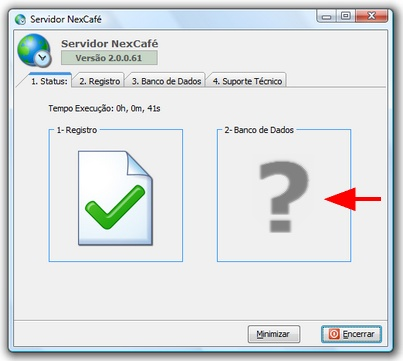
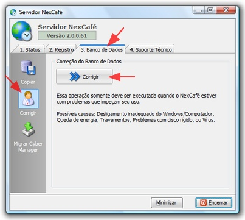

Confira se o banco de dados do servidor está OK.

2. No lugar da interrogação vai aparecer uma imagem que indica a situação do banco de dados do NexCafé:
Seu banco de dados está OK.
Seu banco de dados está com problemas
Para resolver esse problema, clique na aba "3. Banco de Dados", depois em "Corrigir" à esquerda e por ultimo em "Corrigir" à direita.
